| Our niece, Dan Jr.'s youngest daughter, was married across the lake from us in August 2023. It was beautiful, and I have the pictures to prove it. | |
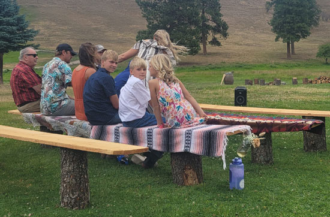 |
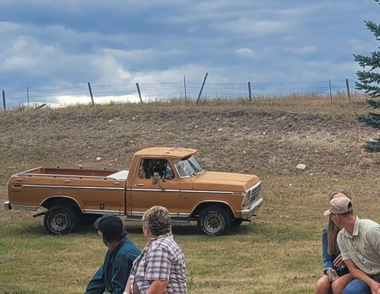 |
| Family: Uncle Timmy, Jeb, Amy, Cooper, Carter, Hanna, Kristi (the one just about to sit down) | The bride arrived driven by her dad Dan in this cool old
truck. As it headed down the hill Jeb exclaimed, "That truck has no brakes!" So we were all happy to see them arrive safely. Kaitlyn's dog Scout was with them. |
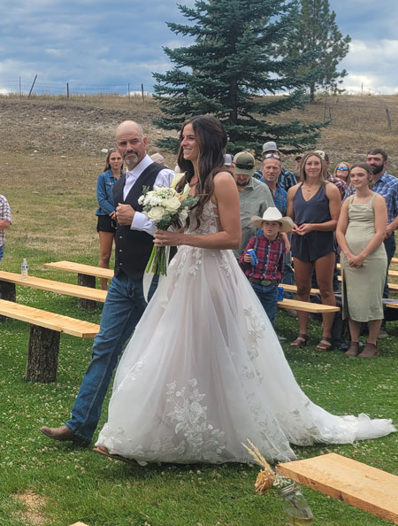 |
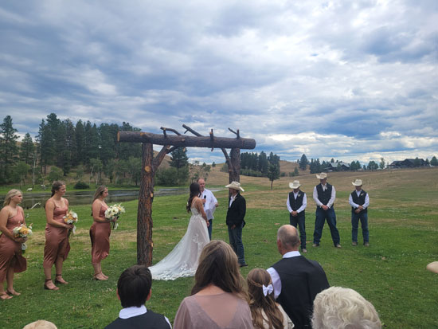 This was actually the 3rd location they'd planned for this wedding.
They had one lodge reserved near |
| Is that a proud father, or what? | |
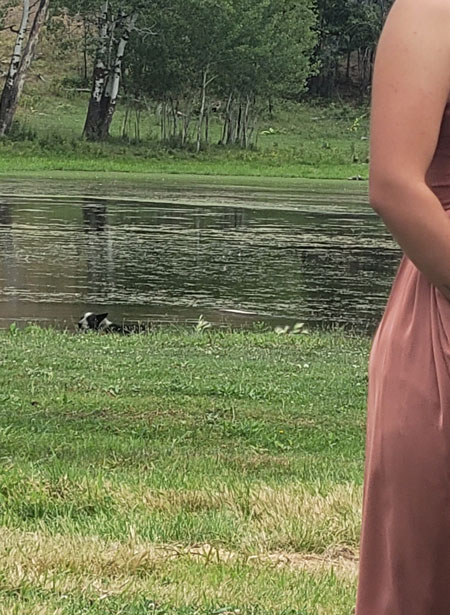 |
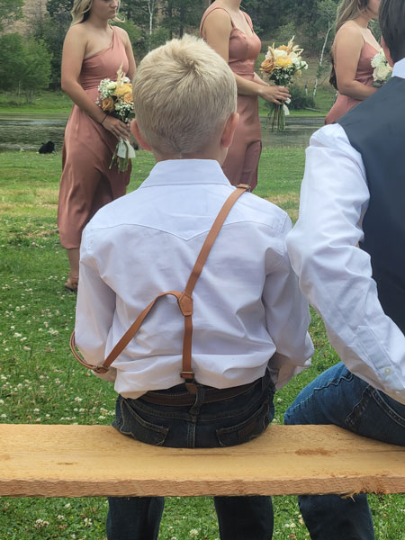 |
| Kaitlyn's dog Scout was the side entertainment while the wedding
was going on. He is never far from Kaitlyn's side, but he did feel the need to go take a dip in the pond, during the ceremony, right behind the bride & groom. I was just waiting for him to come back and shake all over Kaitlyn's dress! |
Hunter is a cutie. He's all boy and very funny!
|
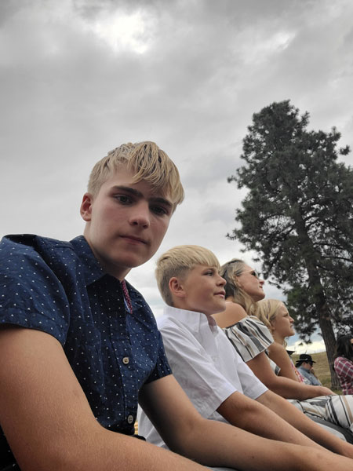 |
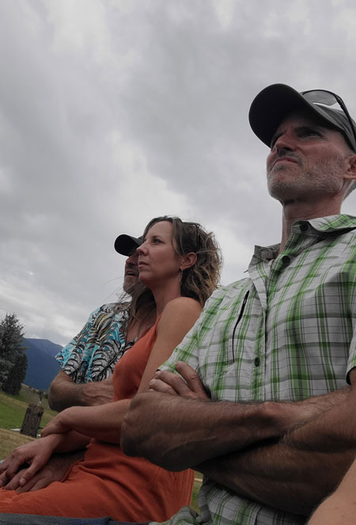 |
| Cooper, Carter, Kristi, and Hanna | Jeb, Amy, and Eric - wearing his happy face. |
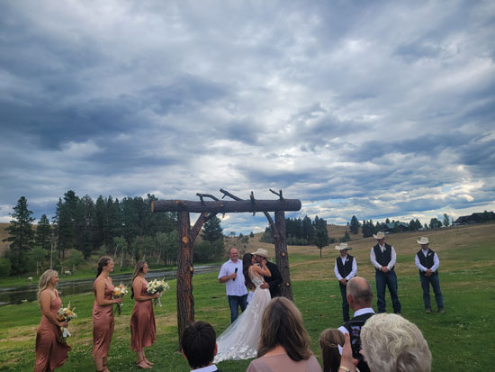 |
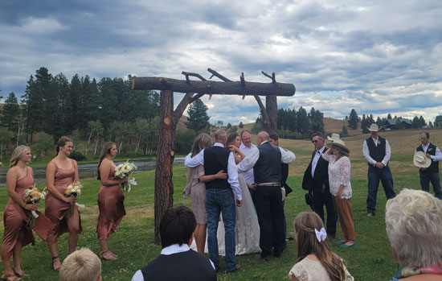 |
| You may now kiss the bride! | A nice touch, they had grandpa Dan come up to give the newlyweds
a blessing. In years past he has conducted most of the ceremonies for his grandkids, but Lucas did the officiating this time. |
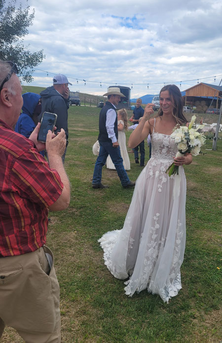 |
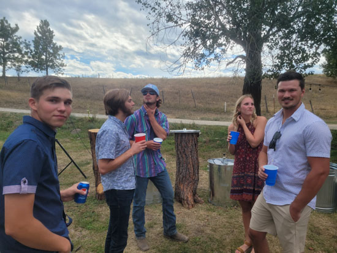 A passel of nephews and a niece - Erik, Cody, Colter, Madison, and her boyfriend Chris. |
| Uncle Timmy takes a lot of photos. He's finally upgraded
to a phone, he's used a digital camera until just this year. |
|
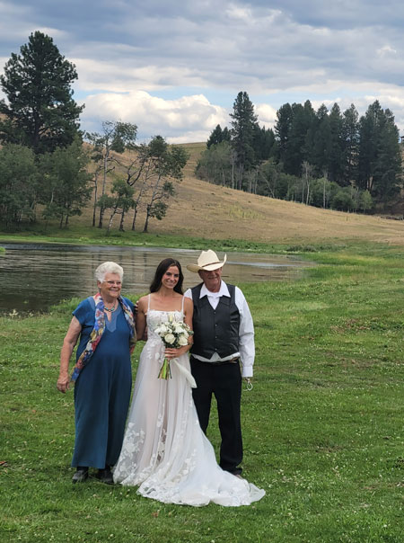 |
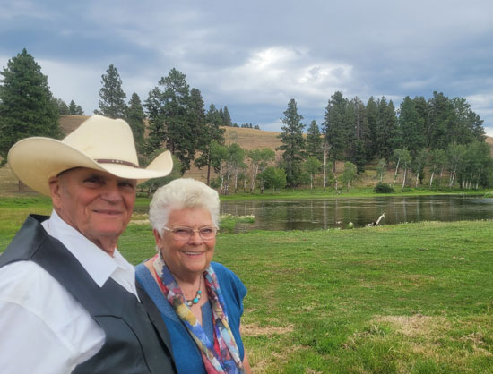 Nice picture of Dan & Rose |
| Kaitlyn with Rose & Dan | |
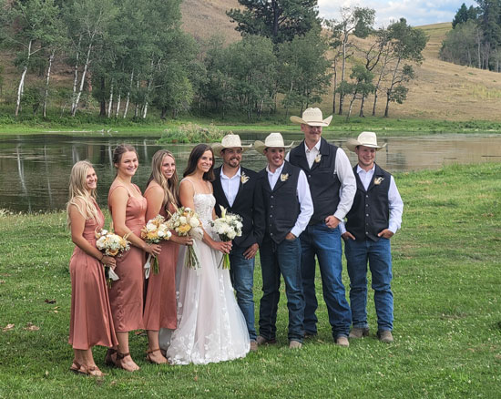 The wedding party. I don't know the first girl, then Maddie,
Kaitlyn's best friend, Ashley, Kaitlyn's |
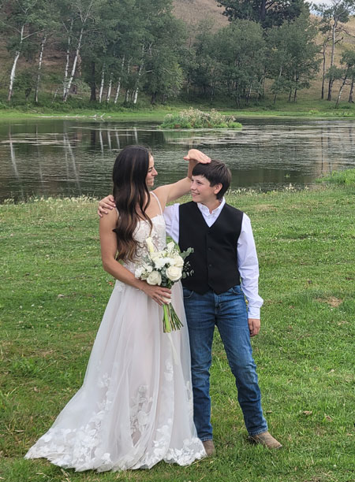 |
| Kaitlyn teasing little brother Lane about his height. He will outgrow her very soon! | |
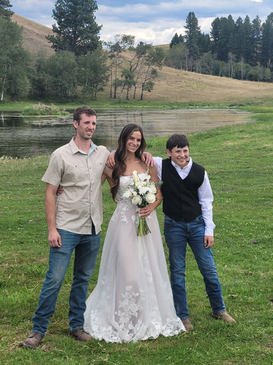 |
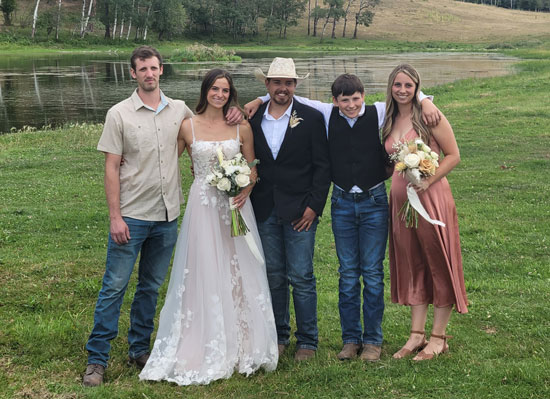 Dan's kids with Strite, the new family member. Dillon, Kaitlyn, Strite, Lane, Ashley |
| Kaitlyn with her brothers, Dillon & Lane. It's very
hard to get a picture of Dillon so this was a big deal! |
|
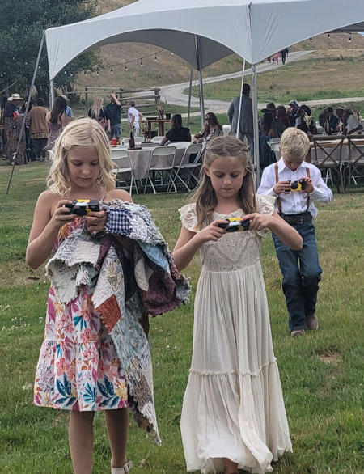 |
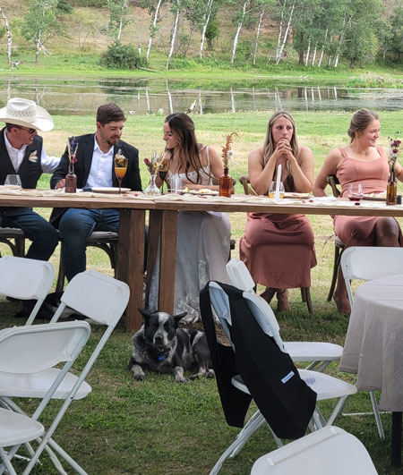 |
| Somehow, I doubt this was what Kaitlyn had in mind when she put out disposable cameras... | Scout was very much a part of the whole ceremony. Here he is at the head table. |
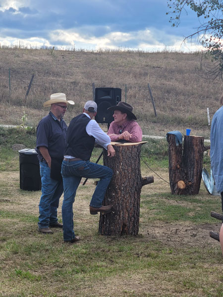 |
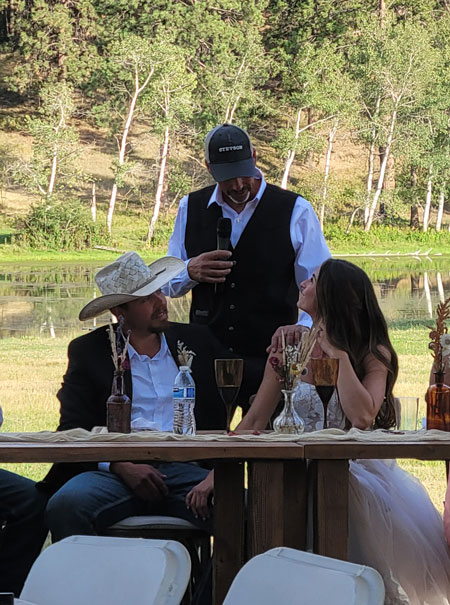 |
| Dan, demonstrating how to use the tree stump tables. They were
so clever! |
Dan giving a lovely toast. Strite's brother gave a hilarious toast that talked about Strite's "irrational confidence" he had to pursue Kaitlyn. |
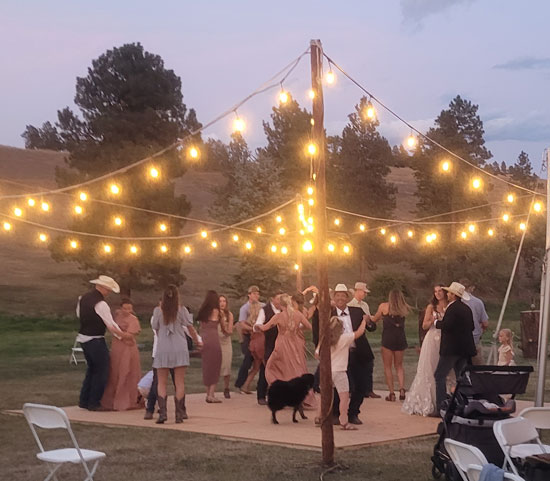 Elderly family dog Bella felt the need to join in on the dance floor. She's still got it! |
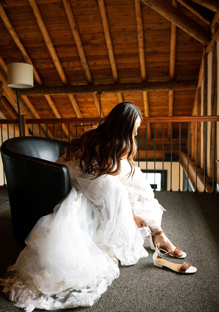 |
| Kaitlyn was kind enough to share some professional photos which I'll include here. | |
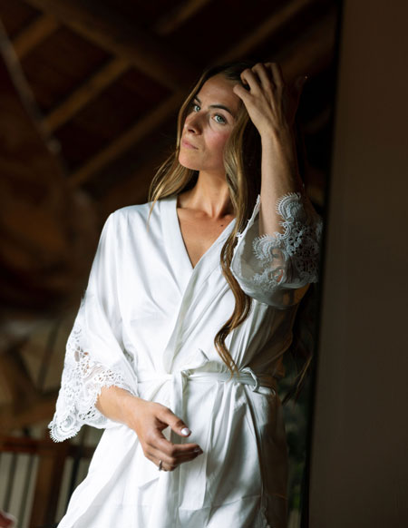 |
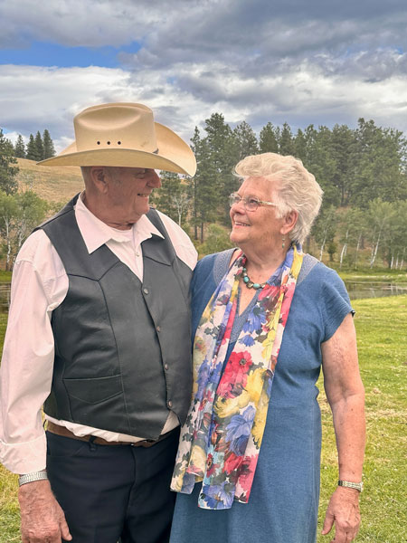 |
| I think Kristi might have taken this one, it's really good! | |
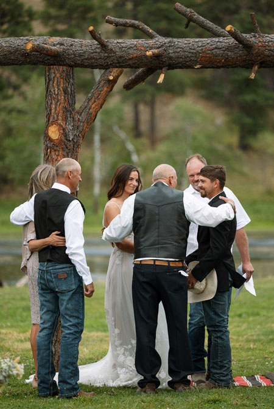 |
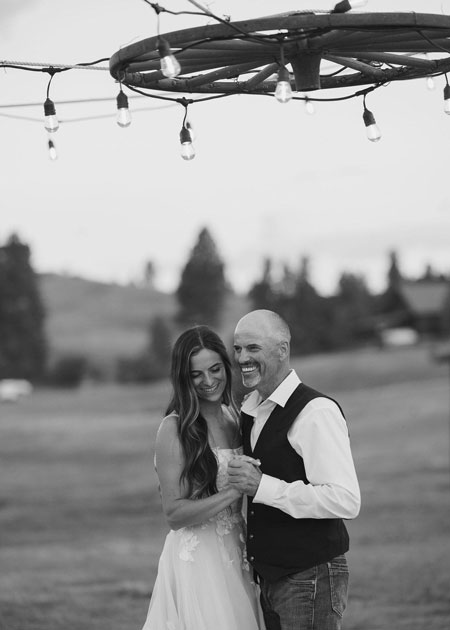 |
| A nice photo of the blessing part of the ceremony. | Daddy-daughter dance |
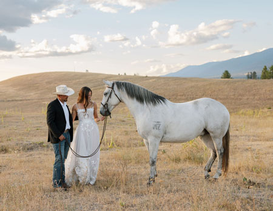 Beautiful photo of the couple with one of their horses. They met
while both were |
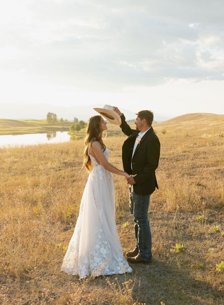 |
| Costich Lake makes a nice background! | |
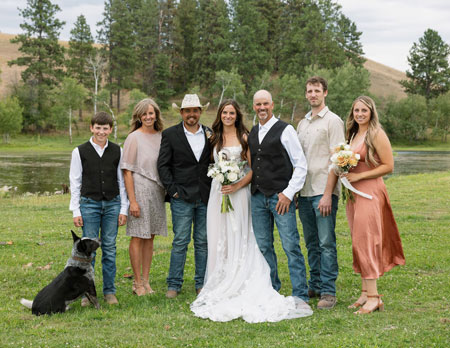 Family photo, including Scout of course! |
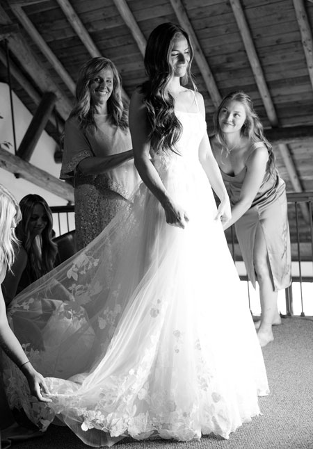 |
| A great picture of Tracie doing her mother-of-the-bride duties. | |